51吃瓜 · 求瓜心愿墙（lite）
版本目的 / 需求背景
站内没有用户想看的瓜时，缺少一个轻量、可攒热度的征集入口。本期上线「求瓜心愿墙」lite：用户不登录即可发心愿、点赞、评论；运营在后台审帖与审评、关联圆梦文章、配置求瓜类型与有偿投稿规则。
要解决的问题：搜不到内容时能被引导进墙；墙上能发、能筛、能搜已有心愿；热度起来后运营可安排成文并回挂；需要时露出有偿投稿说明。
本期做：心愿墙主列表（分页、排序、状态筛选、墙内搜索）、发布求瓜、评论与全部评论页、文章详情跳转、读文后引导继续求瓜、全局搜无结果导流、运营后台（帖子 / 评论 / 配置）、有偿投稿开关。评论在机器审核之外须运营人工上线后才对他人开放；发评后本人即时可见待审态（同帖子 WW-04）。
本期不做：图片上传与展示、井号标签页、站队 / 投票、Agent、登录账号体系、「我的」页、完整版能力。图片若以后要做，另开需求。
业务对象：吃瓜用户与内容运营。预期：用户能发出心愿并被看见；运营能完成审核到圆梦闭环。
需求功能矩阵
| 功能ID | 模块 | 名称 | 描述 |
|---|---|---|---|
| WW-01 | 主页 | 心愿墙列表 | 入口在顶栏「官方信息」二级「求瓜心愿墙」；分页展示求瓜帖；支持最热 / 最新；状态筛：全部 / 征集中 / 已安排 / 已结束。 |
| WW-02 | 主页 | 墙内搜索 | 按正文、求瓜类型、评论命中；有结果带结果条；无结果引导去求瓜。 |
| WW-03 | 发布 | 发布求瓜 | 不登录；必选求瓜类型（选项来自后台配置）；正文；匿名或昵称；合规确认后进待审。 |
| WW-04 | 发布 | 待审本机可见 | 发布成功后仅本人在「全部」置顶看见；进状态筛选不出现；刷新列表或页面后不再展示。 |
| WW-05 | 互动 | 点赞 | 征集中 / 已安排 / 已结束均可点赞（卡片与全部评论页）。 |
| WW-06 | 互动 | 评论（卡片区） | 卡片不出发表框。征集中展示预览（最多 2 条）+「查看全部评论」；已安排仅入口条且在圆梦上方；已结束脚注不展开列表；待审无评论区。卡片预览与「评论 N」仅统计已上线评论；待审评论不对他人展示。 |
| WW-07 | 帖子详情 | 全部评论页 | 发评唯一入口。从「查看全部评论」/「去抢首评」进入；仅征集中底部出发表框；页标题为帖正文；可返回心愿墙。发评后先进待审：本人立刻在列表看到（标「待审核」），他人不可见；运营上线后才公开。 |
| WW-08 | 圆梦 | 已安排与文章 | 关联文章后状态为已安排；卡片展示圆梦入口；用户可跳转文章详情阅读标题与正文并可返回。 |
| WW-09 | 导流 | 全局搜无结果 | 无文章结果时展示现样式模块；主按钮「去心愿墙」；无次按钮。 |
| WW-10 | 导流 | 文章详情引导继续求瓜 | 正文下「下载 / 分享」操作条右侧增加黑底单按钮「去求瓜」，点进心愿墙；不做彩底导流卡。 |
| WW-11 | 有偿 | 有偿投稿 | 仅征集中可露出；按帖手动开/关，或征集满 N 天自动开（过审进征集起算）；已安排不展示；弹层说明用站内既有配置。 |
| WW-12 | 后台 | 帖子管理 | 状态筛选 Tab、搜索、排序；审核 / 关联 / 结束 / 下架 / 有偿 / 置顶等按封板 Demo。 |
| WW-13 | 后台 | 评论管理 | 按帖筛选、搜索；「设为神评」；点赞过阈上墙由前台卡片预览计算。在机器审核之外：运营手动「上线 / 下架」；未上线不对前台他人开放。 |
| WW-14 | 后台 | 运营配置 |
按功能说明
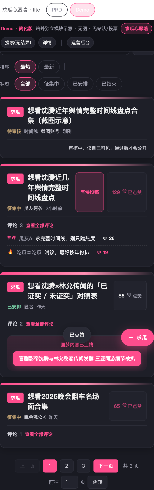
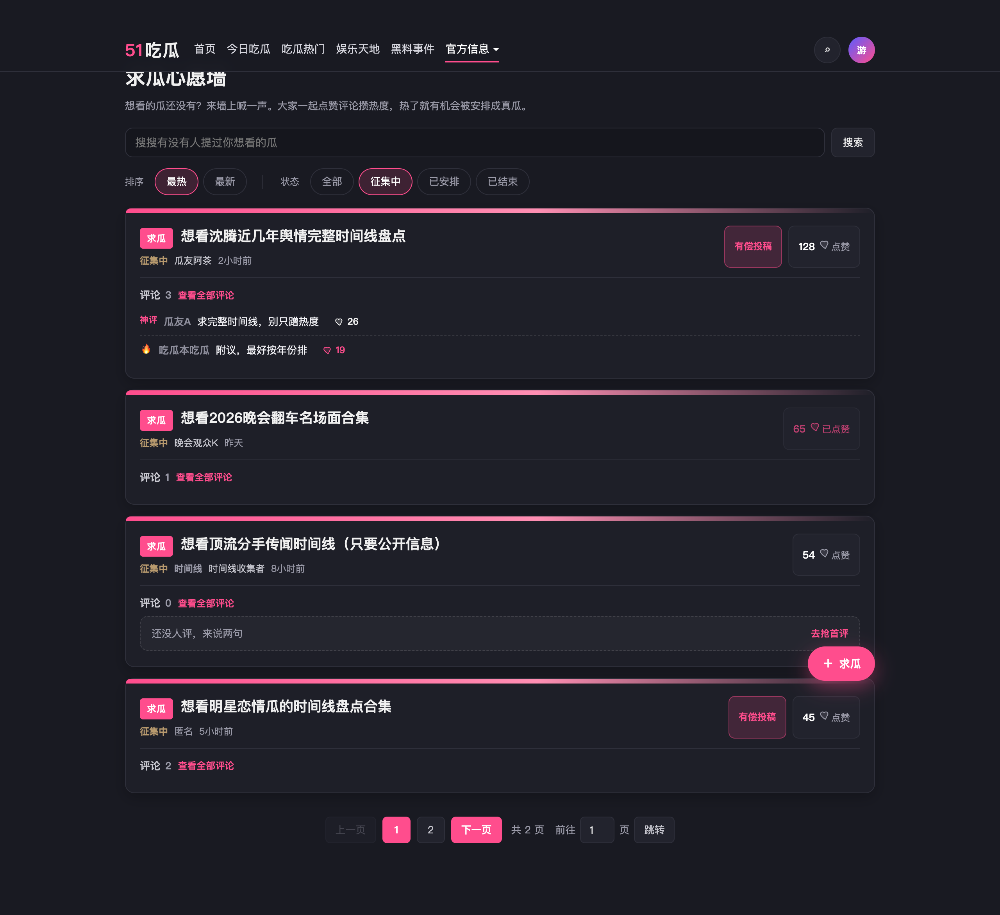
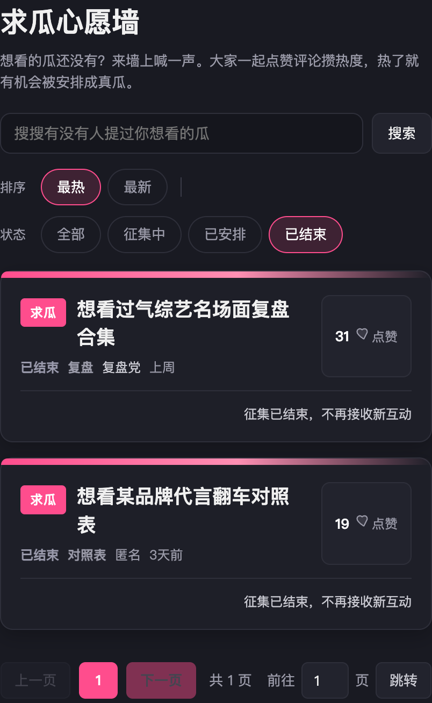
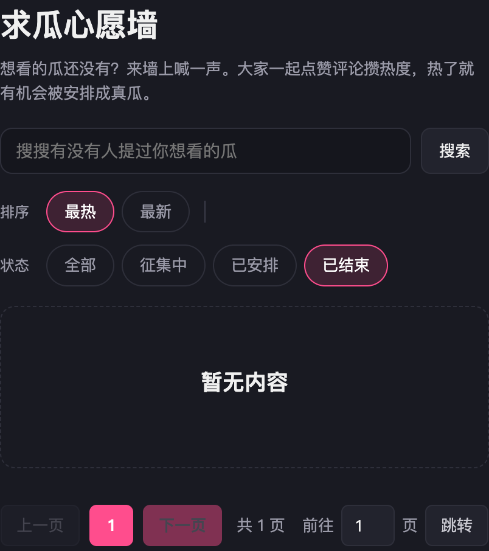
心愿墙列表
功能逻辑
心愿墙入口挂在顶栏一级菜单「官方信息」下，作为二级菜单「求瓜心愿墙」；点开后进入本列表。进入后：先按可见性 + 状态 Tab 过滤（「全部」保留征集中/已安排/已结束，并可插入 WW-04 本机待审），再按「最热 / 最新」排序，最后分页。若墙内有搜索词，过滤后改按 WW-02 命中分排序，不再用「最热 / 最新」。
业务规则
入口
- 站点顶栏一级菜单「官方信息」展开后，二级项「求瓜心愿墙」进入本页（与封板 Demo 一致）。
可见性
- 公开可见状态仅三种：征集中、已安排、已结束。
- 待审、已驳回、已下架不对他人展示；待审仅 WW-04 场景本人可见。
- 有「求瓜类型」时卡片展示类型徽标。
排序：最热
- 默认 Tab 为「最热」。
- 热度分公式（求瓜帖）：点赞数 + 评论条数 × 2。分数高的排前。「评论条数」仅计已上线（对他人可见）的评论；待审 / 已下架不计。
- 同分时以创建时间倒序作为次键（越新越前）。
- 点赞成功后点赞数 +1，热度分即时重算（正式）；同一用户对同一帖只能成功点赞一次（WW-05）。
排序：最新
- 按帖子创建时间倒序：越新越靠前。
- 正式字段用创建时间戳；Demo 用相对时间文案映射近似同一效果，验收以「新帖在前」为准。
状态筛选
- 「全部」：征集中 + 已安排 + 已结束（外加 WW-04 本机会话待审）。
- 「征集中 / 已安排 / 已结束」：只保留对应状态；本机待审不进入这三态。
- 切换排序或筛选时回到第 1 页。
分页与置顶
- 每页条数：封板 Demo 为 4；正式可配置，默认按 Demo 验收为 4。
- 页码条：上一页 / 数字页 / 下一页 / 跳转；超出总页时钳到合法页。
- 后台「置顶」本期只影响后台帖子列表排序，不改变前台墙排序。前台仅 WW-04 本机待审在「全部」插到最前。
页面交互
- 顶栏点「官方信息」展开二级菜单，再点「求瓜心愿墙」进入本列表；当前在墙内或帖详情时，「官方信息」保持选中态。
- 点「最热」「最新」切换排序并高亮当前项；点状态 Tab 切换筛选并高亮。
- 浮层「＋求瓜」打开 WW-03。
- 卡片上的点赞、有偿、评论、圆梦见 WW-05～WW-08、WW-11。
异常
- 过滤后为空：展示「暂无内容」。
- 墙内搜索无结果：见 WW-02。
数据流转
列表读求瓜帖的状态、点赞数、评论数、创建时间；热度分按上式现算或缓存，排序与分页在接口侧或前端完成，结果须与封板 Demo 一致。

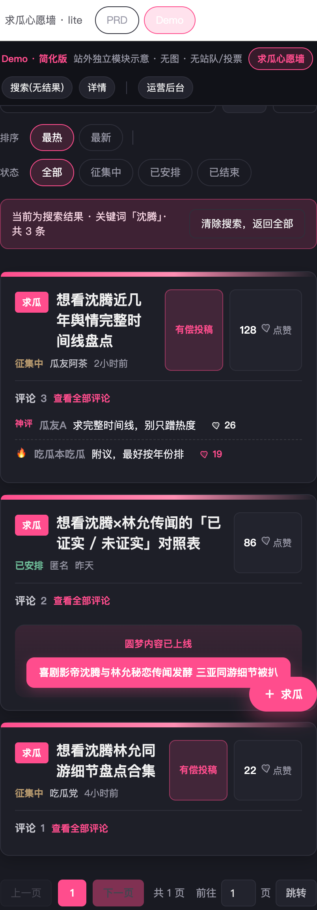
墙内搜索
功能逻辑
在心愿墙顶搜索框检索。只搜当前墙可见帖集合（先走 WW-01 可见性与状态筛选），不走全站文章搜索。有关键词时，结果排序改按命中分，不再使用「最热 / 最新」。
业务规则
- 占位符：「搜搜有没有人提过你想看的瓜」。
- 命中字段与分值（取该帖最高一档，不累加）：正文包含关键词 → 100；求瓜类型包含 → 50；
任一条评论正文包含 → 10任一条已上线评论正文包含 → 10（待审 / 已下架评论不参与命中）。不匹配井号标签（本期无标签）。 - 只保留命中分 > 0 的帖；排序：命中分降序，同分再按热度分（同 WW-01 公式）降序。
- 匹配大小写不敏感；关键词 trim 后为空则视为未搜索，保持原列表。
- 有结果：结果条「当前为搜索结果 · 关键词「X」· 共 N 条」，可「清除搜索，返回全部」。
- 无结果：说明未找到；主按钮「去求瓜」可把当前词带进发布框预填；可清除搜索。
- 待审他人帖、已下架、已驳回不可被搜到。
页面交互
- 点「搜索」或回车触发；搜索后停在第 1 页。
- 「清除」清空关键词，恢复当前筛选下的非搜索列表与排序 Tab。
异常
- 关键词为空点搜索：列表不变，不报错。
数据流转
对可见帖做字段匹配与打分；结果集再按 WW-01 分页。
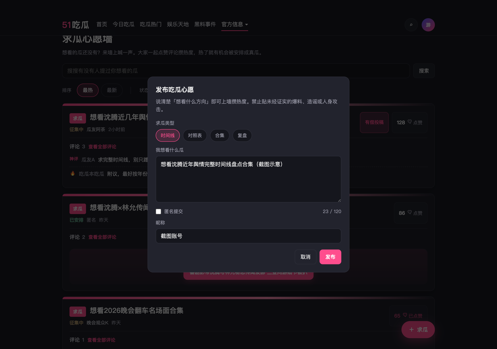
发布求瓜
功能逻辑
打开发布弹层后只能发「求瓜」。必须先选运营配置的求瓜类型，再写正文、选匿名或昵称；校验通过后弹合规确认，确认后创建待审帖并走 WW-04。
业务规则
- 不登录可发。
- 求瓜类型：选项完全来自 WW-14 后台配置（默认时间线 / 对照表 / 合集 / 复盘）；单选且必选，不允许空着提交。
- 打开弹层时默认选中配置列表第一项；用户可改选其它项，不可点取消成「未选」。
- 正文字数：≥ 运营配置最短字数（默认 5），≤ 120；计数按 trim 后长度。
- 非匿名必须填昵称（建议最长 12）；匿名展示名固定为「匿名」，不存用户填的昵称。
- 合规文案来自 WW-14；取消确认回到编辑态；确认后才真正提交。
- 新帖初始：状态待审、写入已选类型、点赞 0、评论空、创建时间为当前。
页面交互
- 入口：浮层「＋求瓜」、墙内搜无结果「去求瓜」等；无结果带词时预填「想看关于「词」的完整盘点 / 复盘」类文案。
- 类型 chips 单选高亮（始终有一项选中）；勾选匿名则隐藏昵称框。
- 成功 Toast「发布成功」；切到墙「全部」、第 1 页，见 WW-04。
异常
- 未选类型（含配置异常导致无选中）：Toast「请选择求瓜类型」，不打开合规确认、不关弹层。
- 后台类型列表为空：Toast「暂无求瓜类型，请联系运营配置后再发」，不可提交。
- 字数不足：Toast「请至少写 N 个字」（N 为配置），不关弹层。
- 超过 120：Toast「最多 120 个字」。
- 非匿名未填昵称：Toast「请填写昵称」。
数据流转
写入待审帖（正文、类型、匿名/昵称、创建时间）；同步进后台待审队列；前台本机可见策略见 WW-04。
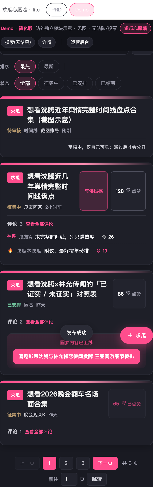
待审本机可见
功能逻辑
发布成功后，本会话在前台「全部」列表最上方插入该待审帖，仅用于本人确认「已提交」。状态展示为「待审核」，不可点赞、不可评论、不展开评论区。切到「征集中 / 已安排 / 已结束」看不到。刷新列表或刷新页面后，前台不再展示该待审帖，但仍在后台待审队列。
业务规则
- 仅「全部」+ 本机会话发布标记同时满足时可见；他人不可见、不可搜到。
- 不做「我的」、不做登录认人；会话标记丢失即前台消失。
- 多条本机会话待审时，都排在公开帖之前（相对顺序按发布时间，新的可在最前）。
- 待审预览不是公开征集：没有评论、没有点赞；脚注说明「审核中，仅自己可见；通过后才会公开」。
页面交互
- 发布成功后强制：筛选「全部」、第 1 页、该帖在列表顶端。
异常
- 刷新后前台消失：符合预期，无错误提示。
数据流转
帖进后台待审；前台额外带本机会话可见标记，刷新清除标记但不删库内待审记录。
点赞
功能逻辑
对可见求瓜帖点赞。成功后点赞数 +1，展示数与热度分（WW-01）同步更新。仅征集中、已安排、已结束可赞；WW-04 本机待审预览不可赞。
业务规则
- 不登录可赞；认人口径与 Demo 一致（本机标记即可），正式可用设备 / 账号防重复。
- 同一用户对同一帖只能成功一次；已赞后按钮文案「已点赞」、禁用，不可取消赞。
- 卡片与全部评论页上的帖级点赞共用同一计数与已赞态。
- 评论点赞独立计数，不计入帖热度分（见 WW-06）。
页面交互
- 未赞：展示当前点赞数 +「点赞」；已赞：数 +「已点赞」且不可点。
异常
- 重复点击已赞：无请求、无 Toast、无计数变化。
数据流转
写帖子 likes；列表「最热」读取该值参与公式。
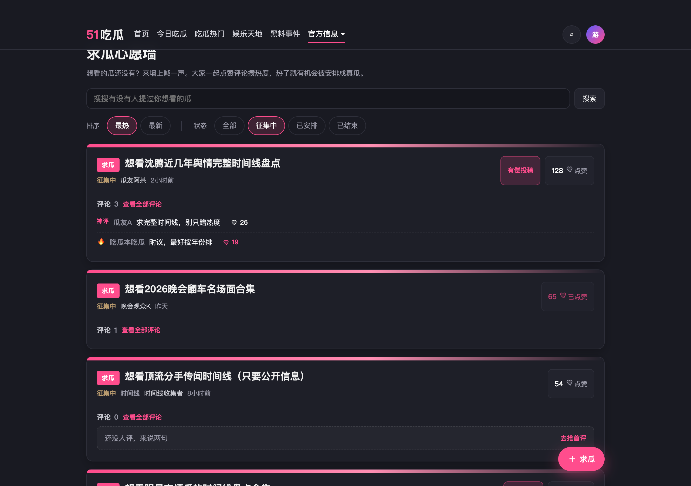
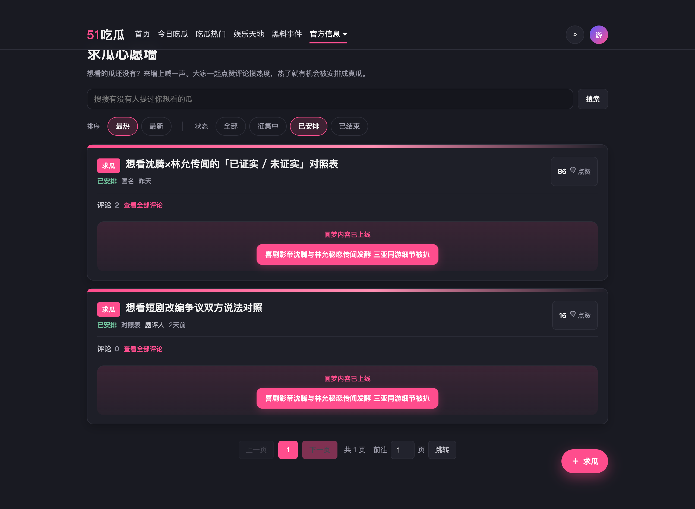
评论（列表与限制）
功能逻辑
卡片评论区只做展示与跳转，从不出现发表框。发评统一在 WW-07 全部评论页完成。按帖状态决定卡片形态：征集中展示预览列表；已安排只留入口条且位于圆梦区块上方；已结束用脚注文案，不展开评论列表。本机待审预览（WW-04）不出现评论区。卡片对外只展示已上线评论；待审评论规则见 WW-07，不进入卡片预览池。
业务规则
- 卡片禁止发表：任意状态下卡片均不出昵称框 / 正文框 /「发送」。
- 卡片「评论 N」：
N = 该帖评论总条数。N = 该帖已上线（对他人可见）的评论条数；待审、已下架不计入。本人本机待审评论不抬高他人看到的 N。 - 可见性：仅「已上线」评论可对他人展示。待审评论仅发表者本人在 WW-07 可见；已下架对前台用户均不可见（含本人，除非产品另定回显——本期本人亦不可见已下架）。
- 卡片预览入池（仅卡片区按热，二选一即可）：① 运营神评（WW-13「设为神评」）；② 评论点赞数 ≥ 10（含当前用户已赞）。不入池的不出现在卡片预览。入池候选仅限已上线评论；待审不可入池、不可因点赞≥10 上墙。
- 卡片预览入池后排序：神评优先于点赞热门；同档按点赞数降序。取前 2 条；不足 2 条有几条展示几条。
- 预览左侧标记：神评文案标；点赞过阈显示 🔥。
- 评论不展示相对时间（卡片预览与全部评论页均不显示 time 文案）。
- 零评论：空态「还没人评，来说两句」+「去抢首评」（进全部评论页）。有评论但无一入池：只保留「评论 N + 查看全部评论」头栏，不渲染预览正文、不出现抢首评。「零评论」指对当前访客可见的已上线条数为 0；本人另有待审评时，卡片仍按对外 N 展示。
- 已安排：不渲染预览正文，仅「评论 N」+「查看全部评论」，且该条在「圆梦内容已上线」上方。
- 无评论图片。
- 评论点赞：预览区可点；每用户每条评论一次；不计入帖热度公式。仅已上线评论可被点赞；待审评论不可赞。
页面交互
- 「查看全部评论」/「去抢首评」进入 WW-07。
- 预览区可对单条评论点赞（未赞可点，已赞禁用）。
异常
- 本块无独立发评校验；发评异常见 WW-07。
数据流转
评论挂帖；N 与热度分的评论项读评论表中已上线子集。卡片预览入池读「神评标记」与实时点赞数；神评由 WW-13 写入。上线 / 下架状态由 WW-13 写入。卡片只读展示，不写评论。
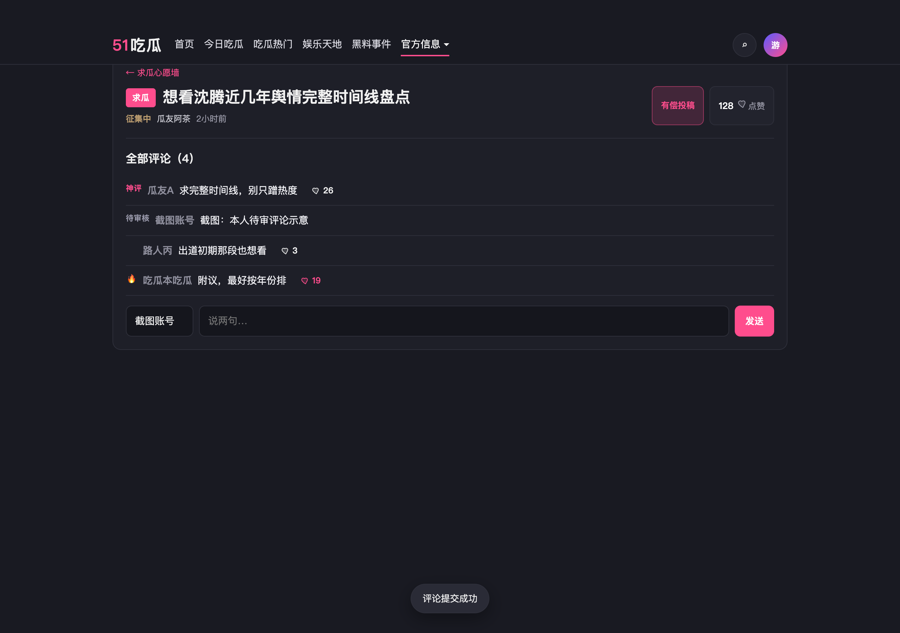
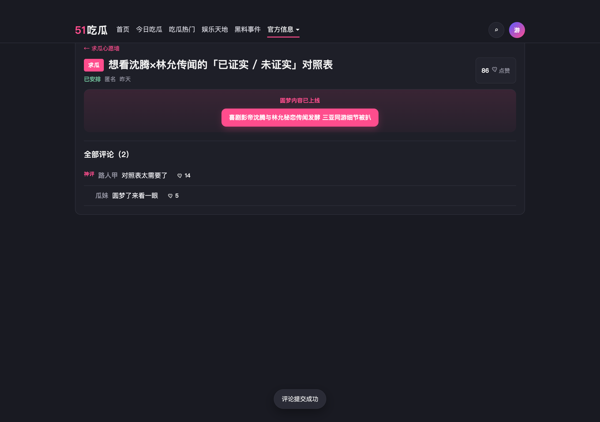
全部评论页（帖子详情）
功能逻辑
二级页展示该帖对当前访客可见的评论与帖级操作，是发评的唯一入口。页眉主标题 = 帖正文。列表排序与卡片预览不同：神评优先，其余按创建时间倒序（不按点赞重排）。仅征集中在底部出发表框；已安排 / 已结束不出发表框（仍可浏览评论、点赞、圆梦入口）。评论须经机器审核后仍进入「待审核」，再由运营人工上线才对他人开放；不审核不开放。发评成功后本人立刻在本页看到该条（待审态），逻辑对齐帖子 WW-04。
业务规则
- 可发评状态：仅征集中。已安排、已结束：全部评论页不出发表框。
- 评论状态：待审核 → 已上线 →（可）已下架。机器审核通过后默认为待审核，不对他人开放；运营在 WW-13「上线」后变为已上线；「下架」后前台不可见。
- 本机待审可见（对齐 WW-04）：发送成功后，该条以「待审核」出现在发表者本人的全部评论列表中（建议插在列表顶部或按创建时间就位并带「待审核」标）；其他用户的列表不包含该条。刷新页面后：正式实现仍保留「本人可见自己的待审评论」；Demo 可按会话模拟。
- 列表排序：神评优先；非神评按创建时间倒序。不做评论置顶；不按点赞排序（按赞只用于 WW-06 卡片预览）。排序对象 = 已上线评论 ∪ 当前用户本人的待审评论。
- 发评：须昵称 + 非空正文；
成功后评论数 +1，可影响帖热度分（评论条数 ×2）。成功后写入待审评论；公开「评论 N」与帖热度分中的评论项不因此 +1，待运营上线后再计入。 - 标题区可含有偿入口、帖点赞（规则同 WW-05 / WW-11）。
- 已安排且有关联文章时，保留圆梦跳转入口。
- 单条评论可展示神评标；可评论点赞。待审条展示「待审核」标，不可点赞、不可被设为神评展示给他人。
- 空评论：可评时「还没人评，来说两句」；不可评时「暂无评论」。空态以对当前访客可见集合为准（他人看不到你的待审时，对其仍可能是空态）。
页面交互
- 「← 求瓜心愿墙」返回墙列表（保持进入前的筛选 / 页码由实现决定，Demo 回墙默认列表）。
- 征集中：底部昵称 + 正文 +「发送」；
发送成功后列表即时追加新评、清空正文框。发送成功后：Toast「评论提交成功」；本人列表即时追加带「待审核」的新评；清空正文框；他人刷新后仍看不到该条。Toast 与成功态文案不提及审核、待审或「通过后可见」。
异常
- 正文为空点发送：Toast「先写点评论内容」；不提交。
- 昵称为空点发送：Toast「先填个昵称」；不提交。
- 帖不存在或已下架不可见：空态「帖子不存在」+ 返回按钮。
- 机器审核未通过：不写入待审队列；Toast 说明无法发布（具体文案与站内机器审核口径一致）；列表无变化。
- 评论被下架后本人再进本页：列表中不再出现该条；若正在看的会话里仍有缓存条，刷新后消失。
数据流转
按帖 ID 拉帖与全量评论；发评写评论表并回写帖评论数。 按帖 ID 拉帖与「已上线评论 + 本人待审评论」；发评经机器审核后写评论表（状态=待审核），不回写公开评论数；WW-13 上线后再回写公开评论数并参与热度。
已安排与文章（圆梦）
功能逻辑
运营给征集中帖绑定一篇站内文章后，帖状态变为已安排。前台卡片出现「圆梦内容已上线」+ 文章标题；点击进入文章详情读正文。导流继续求瓜见 WW-10。
业务规则
- 写入 articleId 的同时状态改为已安排；已安排与已结束互斥，不能并存。
- 取消关联：清 articleId，状态回到征集中。
- 改为已结束：必须清 articleId（见 WW-12）。
- 一张帖同时只关联一篇文章；更换关联即换 articleId，状态仍为已安排。
- 从心愿进文章：纯跳转打开文章详情，不展示「来自心愿」标签，不带心愿正文摘要。
页面交互
- 点圆梦标题 → 打开对应文章详情（与站内其它入口进详情同一套文章页）；文章页可返回。
- Demo 顶栏「详情」直达示意文，用于验收阅读与 WW-10。
异常
- 文章删除或不存在：圆梦点击空态或 Toast 后可回墙；不挡其它入口。
数据流转
帖保存 status=arranged 与 articleId；正文按文章 ID 读内容服务。
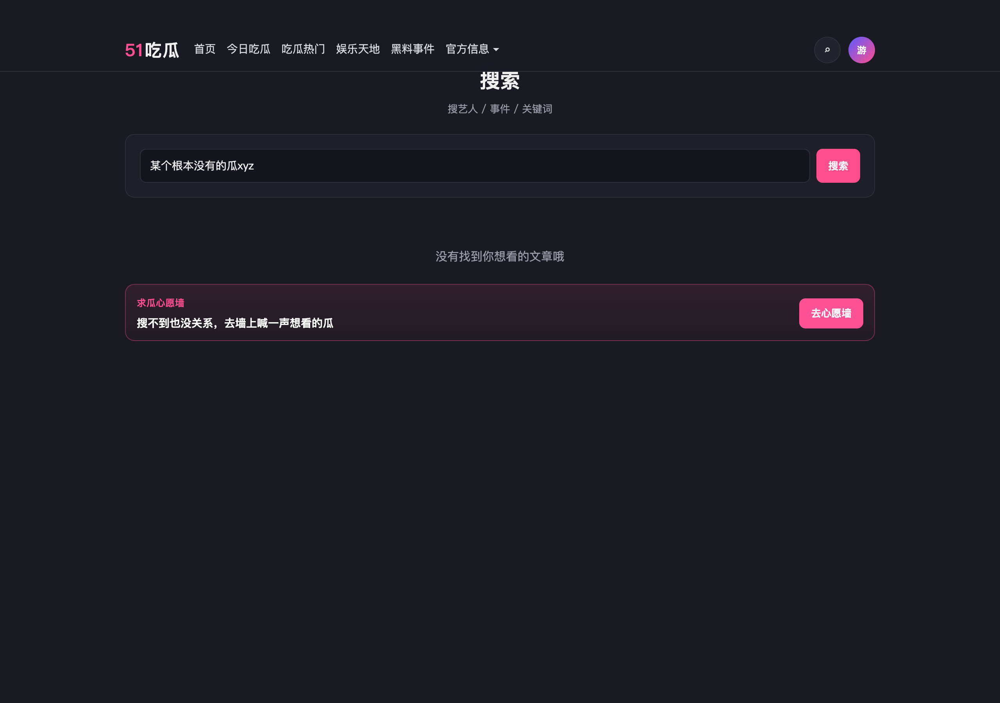
全局搜无结果导流
功能逻辑
用户在全站搜索无文章结果时，展示与封板 Demo 相同的空态模块，引导去心愿墙。这是心愿墙的额外入口，不是墙内搜索。
业务规则
- 主文案：保持 Demo「没有找到你想看的文章哦」及心愿墙说明。
- 主按钮：「去心愿墙」；无次按钮。
页面交互
- 点主按钮进入心愿墙主页。
异常
- 无。
数据流转
无写墙数据；仅跳转。
文章详情引导继续求瓜
功能逻辑
文章详情在正文下方已有「下载 APP」「分享好友」操作条。求瓜入口落在该条右侧，与下载、分享同一行。入口收成单个按钮，黑底非彩底；不再使用正文下方的粉色导流卡（标签 + 说明 + 主按钮）。
业务规则
- 位置：下载、分享按钮的右侧，同一操作条内。
- 形态：整条求瓜入口合成一个按钮，文案「去求瓜」；背景黑色（或近黑），不用粉色 / 渐变彩底。
- 点击进入心愿墙主列表（WW-01）；不强制打开发布弹层。
- 不依赖登录。
- 下载、分享本身为站内既有能力；本需求只规定求瓜按钮的位置与样式，不改下载 / 分享业务。
页面交互
- 点「去求瓜」→ 进入心愿墙主列表；用户可再点发布求瓜（WW-03）。
异常
- 跳转失败：Toast「暂时进不了心愿墙，请稍后重试」；正文与下载 / 分享不受影响。
数据流转
仅跳转进墙，本步不写求瓜数据。
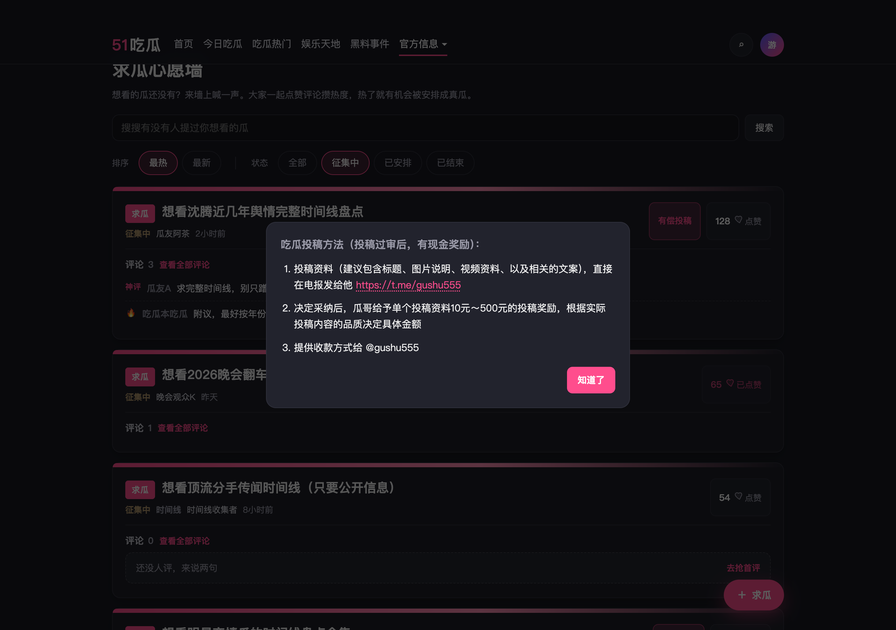
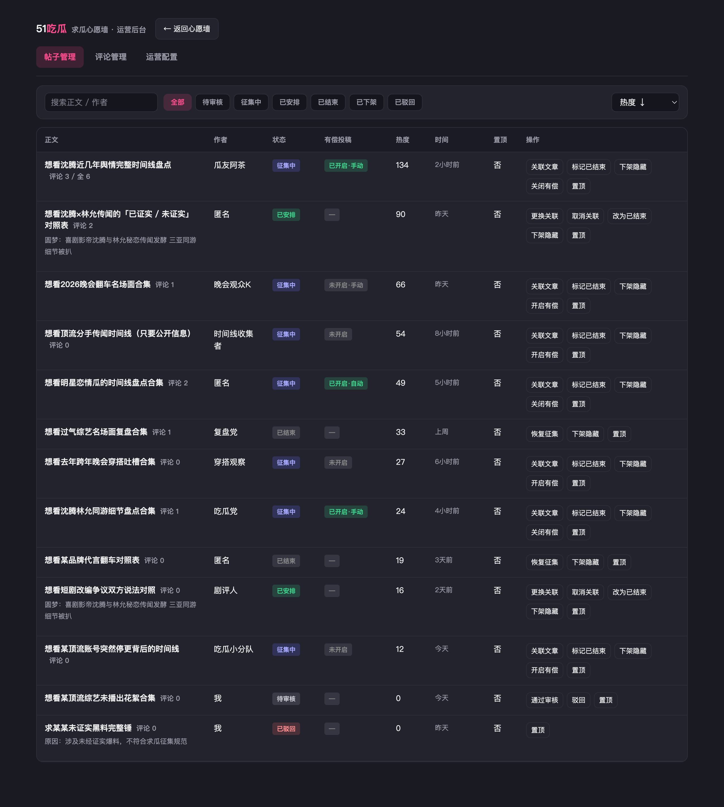
有偿投稿
功能逻辑
仅当「有偿开启判定」为真时，征集中帖在卡片与全部评论页露出「有偿投稿」。已安排表示圆梦已挂出，不再接受有偿投稿，不展示入口。点击打开说明弹层；联系方式读站内既有配置，心愿墙后台不配链接。
业务规则
- 前置：帖状态必须是征集中；已安排、已结束及其它状态一律不展示入口（后台徽章为「—」）。
- 帖级字段 paidGuide：未设置 = 走自动；true = 手动开；false = 手动关。
- 判定顺序：若已是手动 true/false，只认手动结果，不再走自动。仅未设置时：全局「自动开启」关 → 不展示；开则「过审进入征集起算的天数 ≥ N」才展示。N 来自 WW-14（默认 3，范围 1～365）。
- 一旦运营点过「开启有偿 / 关闭有偿」，该帖永久离开自动：字段只在 true ↔ false 间切换，不能改回「未设置 / 走自动」。手动关后即使已满 N 天也不展示，只能再点「开启有偿」。
- 后台徽章文案：已开启·手动 / 已开启·自动 / 未开启·手动 / 未开启（后两字仅未设置且未达自动条件时）。
- 操作列按当前展示结果取反写入 true 或 false（首次点击即从自动变为手动覆盖）。
页面交互
- 点「有偿投稿」开弹层；「知道了」或点遮罩关闭。
异常
- 链接失效：属站内配置，心愿墙只展示配置值。
数据流转
读帖 paidGuide + 过审进征集时间 + 全局 autoEnable/autoDays；前台只读判定结果决定显隐。

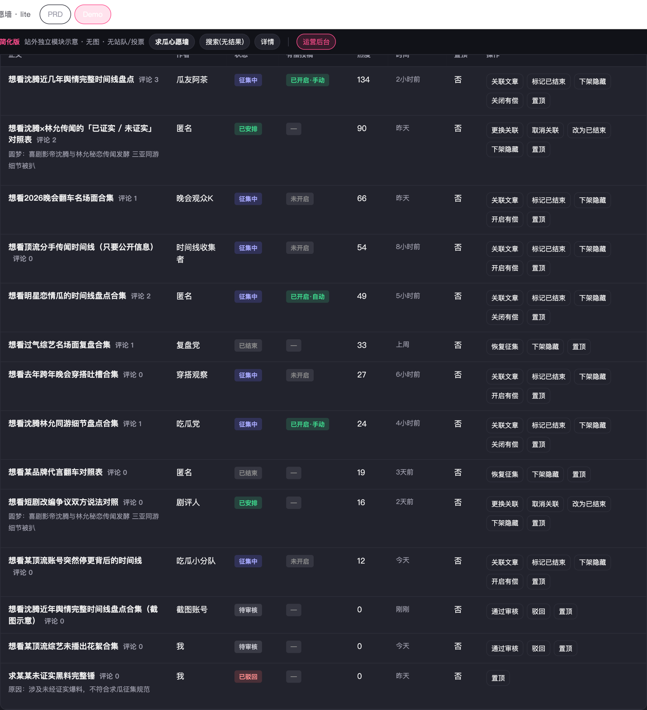
运营后台 · 帖子管理
功能逻辑
后台列出全部求瓜帖（含待审 / 驳回 / 下架）。先按状态 Tab 与搜索过滤，再排序，再按状态机展示操作。不拆角色权限。
业务规则
- 搜索：正文或作者包含关键词（大小写不敏感）。
- 排序：置顶帖永远优先；其下「热度 ↓」与前台 WW-01 同一公式（点赞数 + 评论条数 × 2）降序；热度列展示该分值（可悬停看赞/评明细）。「时间 ↓」在置顶优先后按创建时间倒序。
- 待审核：通过 → 征集中，并记录进征集时间（有偿自动天数锚点）；驳回必须填原因 → 已驳回。
- 征集中：可关联文章（→ 已安排）、标记已结束、下架、有偿开关、置顶。
- 已安排：可更换关联、取消关联（→ 征集中）、改为已结束（须清关联）、下架、置顶；不可再开关有偿（前台亦不展示有偿入口）。
- 已结束：可恢复征集、下架；不可直接关联文章（须先恢复征集）。
- 已下架：仅「重新上架」恢复下架前状态；不提供结束 / 安排入口。
- 已安排与已结束互斥；置顶与否不改变状态机，只影响后台列表顺序。
页面交互
- 点帖文进入评论管理并筛到该帖。
- 有偿列只读徽章；开/关在操作列。
异常
- 驳回无原因：Toast「请填写驳回原因」，状态不变。
- 当前状态不允许的操作：Toast 说明限制，零副作用。
- 无数据：表空态「暂无符合条件的帖子」。
数据流转
写 status、articleId、pinned、paidGuide、进征集时间等字段。
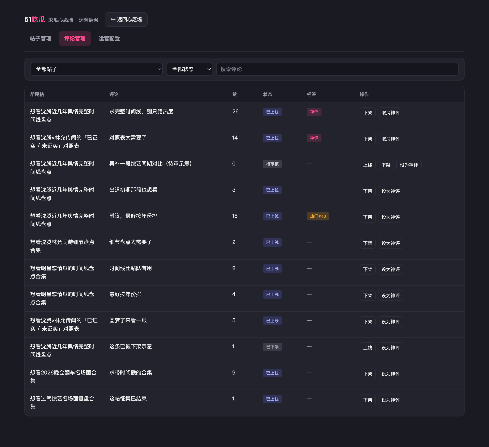
运营后台 · 评论管理
功能逻辑
汇总各帖评论，按帖筛选 / 关键词搜索后列表操作。运营维护「神评」标记。在现有机器审核之外，运营对评论做人工「上线」与「下架」：未上线不对前台他人开放。点赞过阈是否上卡片预览由前台按 WW-06 实时计算。
业务规则
- 状态机：机器审核通过 → 待审核（默认，前台仅发表者本人可见）→ 运营「上线」→ 已上线（对所有人可见，计入公开评论数与热度）→ 运营「下架」→ 已下架（前台均不可见，公开评论数 −1 并重算热度；可再次「上线」恢复）。机器审核未通过的不进本表待审队列（或单独垃圾箱，本期以前者不进表为准）。
- 不审核不开放：待审核评论不得出现在他人前台列表 / 卡片预览 / 墙内搜索命中评论字段。
- 列表排序：神评优先，其次按评论创建时间倒序（与 WW-07 全部评论页一致；不按点赞排序）。后台列表含全部状态；可用状态 Tab 或筛选项切换「全部 / 待审核 / 已上线 / 已下架」。
- 设为神评 / 取消神评：写入神评标记；神评进入卡片预览池并显示「神评」标（见 WW-06）。仅「已上线」评论可设为神评；待审核 / 已下架点「设为神评」→ Toast「请先上线该评论」，零副作用。
- 表格「标签」列只读，方便扫一眼该评在前台卡片预览的资格，不可点击修改：
- 已设神评 →「神评」
- 未设神评，但点赞数 ≥ 10 →「热门≥10」（表示按 WW-06 也会进卡片预览，来源是点赞而非运营标记）
- 以上都不是 →「—」
页面交互
- 筛选「全部帖子」或单帖；搜索评论正文。
- 按钮文案随状态在「设为神评 / 取消神评」间切换。
- 待审核行：主操作「上线」；可选「下架」或驳回类操作若与下架合并，本期统一用「下架」表示不对前台开放且不进已上线。
- 已上线行：主操作「下架」；可「设为神评 / 取消神评」。
- 已下架行：主操作「上线」（重新开放）；「设为神评」按上条不可用 Toast。
- 上线成功 Toast「已上线」；下架成功 Toast「已下架」；列表状态列即时更新。
异常
- 无评论：表空态「暂无评论」。
- 对已上线重复点上线、对已下架重复点下架：Toast 说明当前已是目标态，零副作用。
数据流转
写评论神评标记与评论状态（待审核 / 已上线 / 已下架）；前台卡片预览读神评标记 + 点赞数门槛且仅已上线；列表排序读神评 + 创建时间。上线 / 下架回写帖公开评论数，触发热度重算。
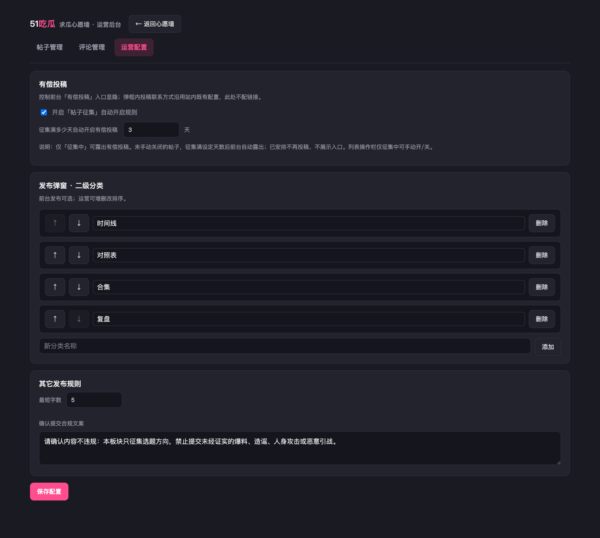
运营后台 · 运营配置
功能逻辑
保存全局运营参数；立即影响前台发布校验、求瓜类型 chips、有偿自动判定。浮窗文案仅为入口示意，真实入口链路由站内配置。 运营配置不含浮窗 / 入口相关项；心愿墙入口见 WW-01「官方信息」二级菜单。
业务规则
- 求瓜类型：有序列表，可增 / 删 / 改名 / 上下移；前台发布 chips 按此顺序且必选其一。
- 至少保留 1 个类型：删到只剩 1 个时不可再删（Toast「至少保留一个求瓜类型」）；禁止保存成空列表。
- 有偿自动：总开关 + 天数 N；开启后按 WW-11 公式用「过审进征集天数 ≥ N」判定；默认开、N=3。
- 最短字数：默认 5；发布校验读取该值。
- 合规确认文案：发布二次确认展示该文本。
页面交互
- 点「保存配置」成功 Toast；未保存的编辑不生效。
异常
- 天数空或非法：保存时回落默认 3。
- 类型名为空：不允许添加 / 保存该行（或忽略空行，与 Demo 一致）。
数据流转
读写运营配置；类型数组给 WW-03；autoEnable/autoDays 给 WW-11。
验收
| 功能ID | 验收标准 |
|---|---|
| WW-01 | □ 最热=点赞+评论×2 降序；最新=创建时间倒序；每页 4；四态筛选；后台置顶不影响前台序 |
| WW-02 | □ 命中分正文100/求瓜类型50/评论10；同分按热度；有结果条/无结果可去求瓜 |
| WW-03 | □ 不登录可发；求瓜类型后台配置且必选；合规确认 |
| WW-04 | □ 发后「全部」置顶可见；筛状态不可见；刷新后前台不再见 |
| WW-05 | □ 仅征集中/已安排/已结束可赞；待审不可赞；点赞+1 进热度；不可重复赞、不可取消 |
| WW-06 | □ 卡片无发表框；预览仅神评或点赞≥10，最多 2，神评优先再按赞；无最新/无时间；待审无评论区；已安排仅入口在圆梦上方；「评论 N」与预览仅已上线；待审不对他人展示 |
| WW-07 | □ 发评仅在全部评论页；列表神评优先再时间倒序（不按赞）；仅征集中有发表框；可返回墙；发评进待审，本人即时可见「待审核」，他人不可见；上线前不计入公开评论数与热度 |
| WW-08 | □ 关联后已安排；圆梦可进文章且正文可读、可返回 |
| WW-09 | □ 全局无结果仅主按钮去心愿墙 |
| WW-10 | □ 正文下操作条右侧黑底「去求瓜」；与下载/分享同行；无彩底导流卡；可进墙 |
| WW-11 | □ 仅征集中可显有偿；已安排不显；手动覆盖优先；自动=满 N 天；徽章非征集中为 — |
| WW-12 | □ 置顶优先；热度列/排序=赞+评论×2（同前台）；状态机与操作列与封板一致；通过审核记下进征集时间 |
| WW-13 | □ 可设为神评；列表神评优先再时间倒序；神评进卡片预览池；待审可「上线」、已上线可「下架」；未上线不对前台他人开放；仅已上线可设神评 |
| WW-14 | □ 类型与有偿规则可保存并影响前台 |
交互真源：同目录封板 wish-wall-lite-demo.html。顶栏「Demo」会打开可点原型页（可再点 PRD 回来）。